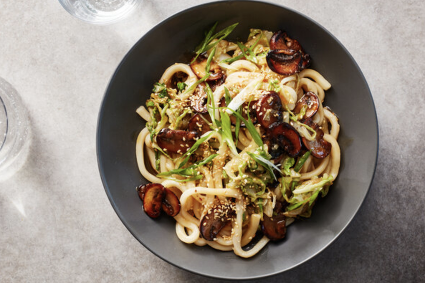

Mushroom Udon Noodles

Description
Easy favorite, takes about 30 mins
Ingredients
- Kosher salt (Diamond Crystal)
- 1 ½ pounds fresh or frozen udon noodles (vacuum-sealed)
- 2 tablespoons neutral oil, such as vegetable or grapeseed
- 1 pound cremini mushrooms, stemmed and sliced into 1/4-inch pieces
- 4 garlic cloves, finely chopped
- Black pepper
- 3 tablespoons honey
- 4 tablespoons butter, preferably salted (see Tip)
- ½ small head Napa cabbage, finely sliced (about 1 pound)
- 3 tablespoons soy sauce
- 2 scallions, finely sliced
- 1 tablespoon sesame seeds, toasted
Steps
- Bring a large pot of salted water to a boil, add the udon noodles and cook for about 2 minutes, using wooden chopsticks or tongs to gently loosen the noodles from their tight bundle. Drain, rinse with cold water and leave to continue draining while you prepare the remaining ingredients.
- Heat a wok or large (12-inch) skillet on medium-high, until very hot. Add oil and mushrooms, and stir-fry for 7 to 8 minutes, leaving undisturbed for 30 seconds to 1 minute at a time, to allow them to caramelize. (Be patient: They will release a lot of liquid, then start to brown.) Add the garlic, 1/2 teaspoon salt and a few turns of black pepper. Drizzle the mushrooms with 2 tablespoons of honey, then add 3 tablespoons of butter and toss.
- Add the udon noodles, Napa cabbage and soy sauce to the pan, then toss for 2 minutes, until the cabbage is wilted and everything is well combined. Remove from the heat and add the remaining 1 tablespoon honey and 1 tablespoon butter. Taste and season with more salt and black pepper, if required. To serve, scatter with scallions and sesame seeds.
Tip
If using unsalted butter, add an additional 1/4 teaspoon of salt in Step 2.